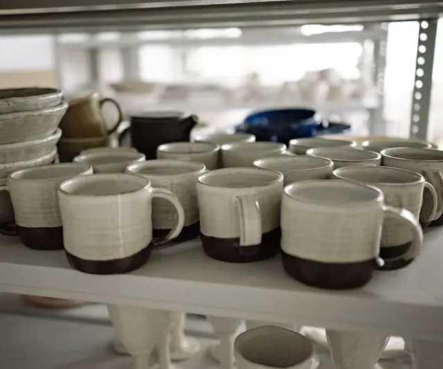
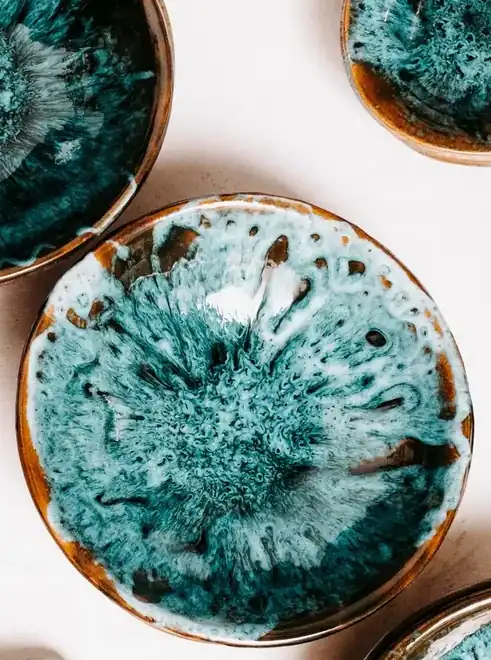
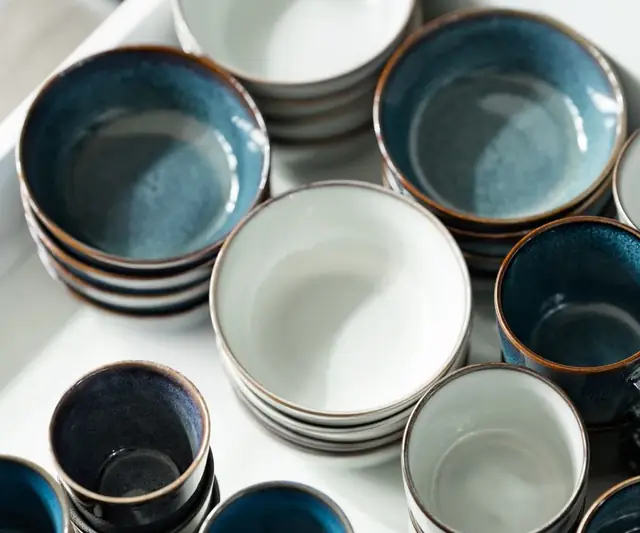
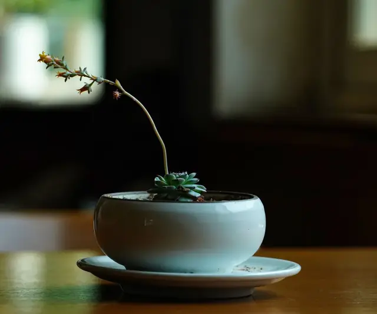
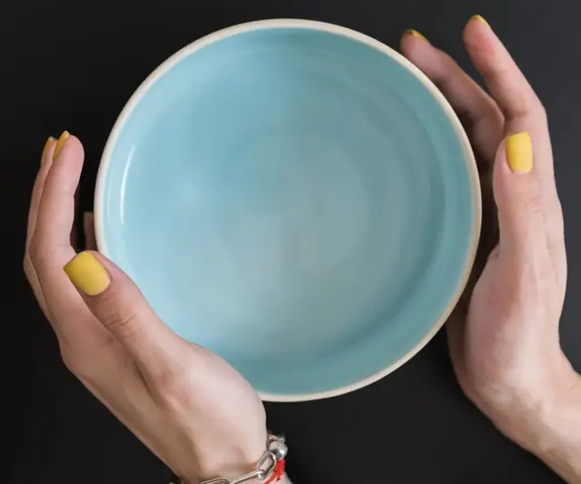
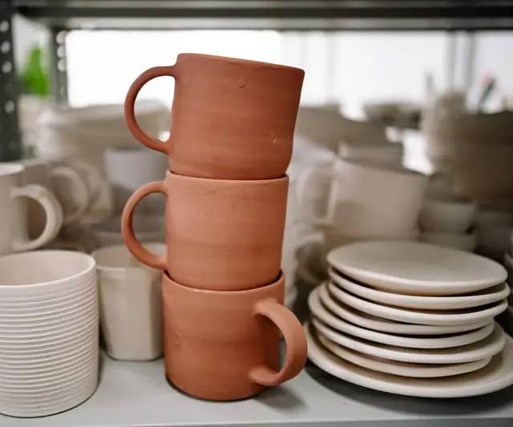
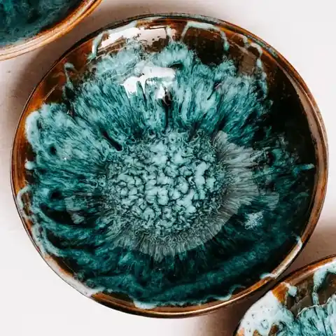
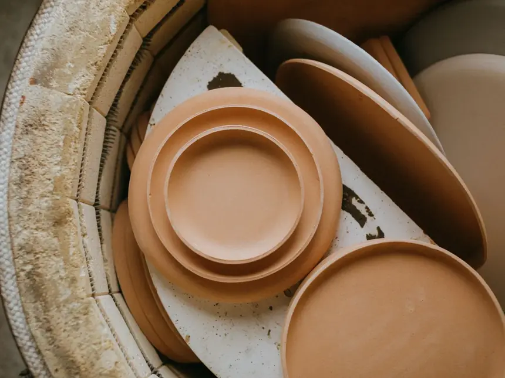

Stoneware mug
Holds 12 fl oz, pulled handle, glazed inside

$34
Wheel-thrown stoneware mugs, bowls and planters from a small kiln
For anyone who wants a mug, a bowl or a planter that is the only one like it: thrown by hand in Taos, glazed in small kiln batches and shipped double-boxed within the USA.

Six things come out of this kiln, and each has one price. No tiers and no bundles to decode: the number pressed into the tile is what the piece costs, in any glaze.
Holds 12 fl oz, pulled handle, glazed inside

$34
6 in across, holds 20 fl oz, trimmed foot ring

$38
10½ in across with a low rim

$46
5, 6½ or 8 in wide, drainage hole, fitted saucer

$58
9 in across, holds about 2 quarts

$84
Dinner plate, side plate, bowl and mug from one batch

$139
Shipping is separate and flat. Original Delivery, our double-boxed standard, costs $12 for a box of up to four pieces to the lower 48 states. The full shipping table.

Most glazes stay where you put them. Our turquoise does not. Near the top of the firing Rocket Pool turns as runny as warm syrup, slides down the wall of a bowl and gathers in the bottom, where it sets thick, dark and glassy. Potters call that pooling. On a rim, where the glaze is thinnest, it breaks to a rusty brown and lets the clay show through.
Because the glaze moves on its own, no two Rocket Pool pieces match, and that is the point of it. Anything on the price list can be ordered in Rocket Pool, or in one of the three glazes that stay put.
Each mug starts as a pound of clay on the wheel and gets a handle pulled by hand the next morning. It holds 12 fl oz with room left to carry it across the kitchen, and the inside is always fully glazed.
The cereal bowl is 6 in across and deep enough for soup. The serving bowl is its big sibling at 9 in, thrown from four pounds of clay. Both are trimmed to a foot ring so they sit level and stack.
Plates are the hardest thing we throw: 10½ in across, a low rim, and a floor that has to stay flat through two firings. The ones that warp never reach the shelf.
Three sizes, each with a drainage hole and a saucer thrown to fit it. The outside is glazed and the inside is left as bare fired clay below the rim. The pot sizer tells you which one your plant needs.
Our signature glaze, fired in kiln loads of its own. It runs, it pools, and it never lands the same way twice. Ask for it on anything on the price list.
One dinner plate, one side plate, one cereal bowl and one mug, thrown and glazed together so they belong together. The side plate is made only for the set.
Type the width of the pot your plant lives in now and say how it grows. The Planter Pot Sizer applies the old repotting rule of thumb (one to two inches wider for slow growers and succulents, two to four for fast growers), works out the potting mix, and names the studio planter that fits. It is useful even if you never buy a pot from us.
Try it here
A slow grower in a 4 in pot wants its next pot 5 to 6 in wide. Our small planter, 5 in across, fits: $58 with its saucer.
An order here runs like a firing: load, climb, peak, cool, unload. Five steps, and you are charged only at the third.
Fill in the order form: which pieces, how many, which glaze, and where they are going. Sending it costs nothing and commits you to nothing.
Within one working day we take your pieces off the shelf, photograph those exact pots and e-mail you the pictures with the total.
Happy with what you see? Pay through the secure payment link in that e-mail. Prefer another mug from the batch? Tell us and we swap it. Nothing is charged before this step.
Each piece is wrapped, bedded in an inner box and floated inside a second, larger one. That is Original Delivery, and it leaves Taos within two working days of payment.
Three to six working days later the parcel lands. Open it, look the pieces over, and write within seven days if anything cracked on the road.

Fallen Dragon Studios is a small pottery in Taos, New Mexico. Everything it sells is thrown on a wheel, trimmed, bisque-fired, glazed and fired again to cone 6 in a kiln small enough that one load is a few dozen pieces. At that size every pot is picked up and looked at five or six times before it gets a price.
We care about a foot ring that will not scratch your table, a handle that takes three fingers, a rim that feels right on the lip, and a glaze that is fully melted and smooth wherever a spoon will touch it. A pot with a crawl (a bare patch where the glaze pulled back) or a sharp spot is broken up and goes back into the clay bin, not onto this site.
Six answers, straight from the wedging table. Anything else: kiln@fallendragonstudios.com.
Yes. Stoneware fired to cone 6 is dense and takes in almost no water, so a dishwasher does not trouble it; use any rack. We still wash our own by hand, because years of dishwasher detergent slowly dull a glossy glaze. The microwave is fine for reheating. What stoneware dislikes is a sudden jump in temperature, so never move a bowl straight from the refrigerator into a hot oven.
Rocket Pool is our deep turquoise. Near the top of the firing it turns runny, slides down the wall of a piece and pools thick in the bottom, where it sets darker and glassier than on the walls. On rims and edges it thins and breaks to a rust brown. The name comes from how fast it takes off down the side of a bowl.
It will look like a sibling of it. Photos here show the shape, the size and the glaze family. Throwing lines, speckle, runs and pools fall differently on every pot, which is why we photograph the exact pieces set aside for your order and e-mail them to you before you pay.
Original Delivery is the one way we ship, and the name means just what it says: the original you approved is the one that arrives. Each piece is wrapped in paper and set in a snug inner box, and that box floats on two inches of padding inside a larger one. Plates travel on edge, never flat. One box carries up to four pieces and goes out with tracking.
Send a photo of the piece and the box to kiln@fallendragonstudios.com within seven days of delivery. We ship the closest sibling from the shelf or refund the piece and its shipping, whichever you prefer. You do not have to post the shards back.
Every planter has one half-inch drainage hole in the center of its floor, and every planter comes with a saucer thrown to fit it. The saucer is glazed on top so water wipes off and bare underneath, so give it a mat if your sill is polished wood.
Pick the pots. We pull them from the shelf, show you the exact pieces, and pack them twice. You pay only once you have seen them.
Order stoneware